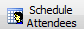
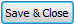

from sikuli import * import logging import csv # - - - - - - - - - - - - - - - - - - - - - - - - - # def Create_CalEntries(): # - - - - - - - - - - - - - - - - - - - - - - - - - # logging.debug('- create calendar entries') time.sleep(1) eventCount = 0 eventDataFile = Settings.dataFolder + "\\calData.csv" allEvents = csv.DictReader(open(eventDataFile)) for calEvent in allEvents: eventCount += 1 logging.debug(' - create: ' + calEvent["subject"]) type("l", KeyModifier.ALT) type("n") time.sleep(1) # subject type(calEvent["subject"]) type(Key.TAB) # categories for downarrow in range(1,eventCount%10): type(Key.DOWN) type(Key.TAB) # start date type(calEvent["startDate"]) type(Key.TAB) # TS2013 requires extra TAB if int(Settings.tsVersion) < 2014: type(Key.TAB) # start time if calEvent["startTime"] != "no": type(calEvent["startTime"]) type(Key.TAB) # end date type(calEvent["endDate"]) type(Key.TAB) # TS2013 requires extra TAB if int(Settings.tsVersion) < 2014: type(Key.TAB) # end time if calEvent["endTime"] != "no": type(calEvent["endTime"]) type(Key.TAB) # all day if calEvent["allday"] == "yes": type(Key.SPACE) type(Key.TAB) # private if calEvent["private"] == "yes": type(Key.SPACE) type(Key.TAB) # location type(calEvent["location"]) type(Key.TAB) # mark for slip creation type(Key.TAB) # tabs type(Key.TAB) # create meeting for if calEvent["everyone"] == "no": type(Key.HOME) for downarrow in range(eventCount%5): type(Key.DOWN) # schedule if calEvent["everyone"] == "yes": click() time.sleep(1) type(Key.INSERT) type(Key.ENTER) # switch to Notes tab type(Key.F6) # notes field type(calEvent["notes"]) type(" - Event: " + str(eventCount)) click() type(Key.F4, KeyModifier.CTRL) # - - - - - - - - - - - - - - - - - - - - - - - - - # def Calendar_Stuff(): # - - - - - - - - - - - - - - - - - - - - - - - - - # logging.debug(' ') logging.debug('Calendar_Stuff') type("l", KeyModifier.ALT) type(Key.ENTER) time.sleep(1) Create_CalEntries()